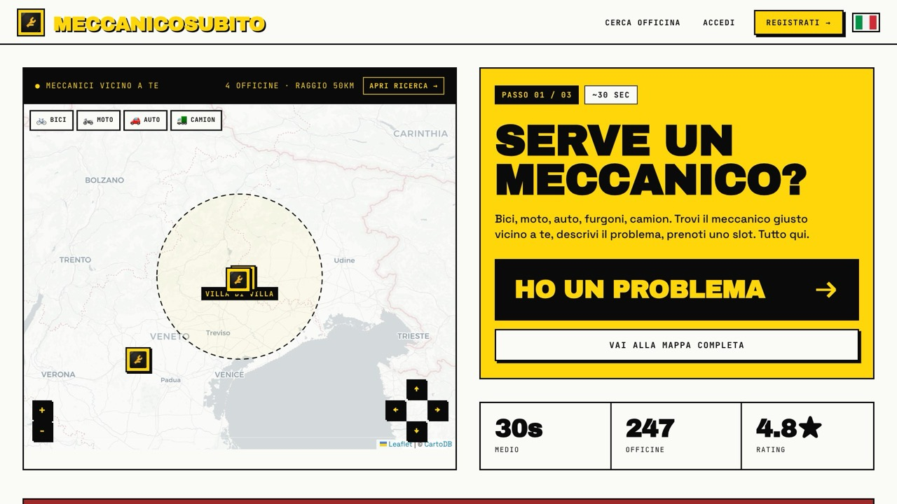

MeccanicoSubito
Un'applicazione pensata per le officine meccaniche: gestisce prenotazioni, tempi e pagamenti, e tiene il cliente aggiornato sullo stato della lavorazione in tempo reale, comprese le richieste che nascono in corsa quando emerge un problema non previsto.
- Prenotazioni e gestione degli appuntamenti dell'officina
- Stato dell'ordine visibile al cliente mentre il lavoro procede
- Pagamenti e fatturazione automatica
- Modello a commissioni ridotte, senza canone di abbonamento
TypeScript
Web app
Pagamenti